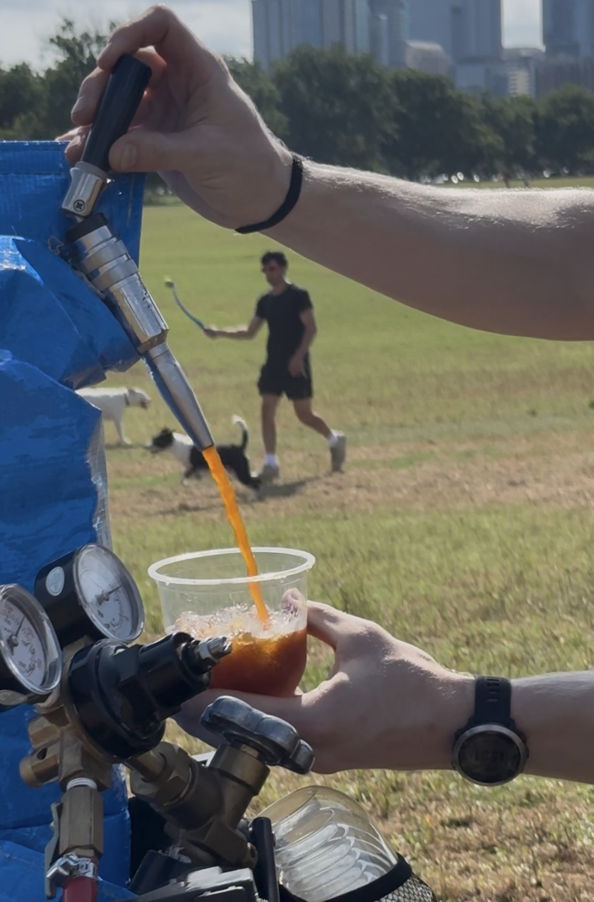
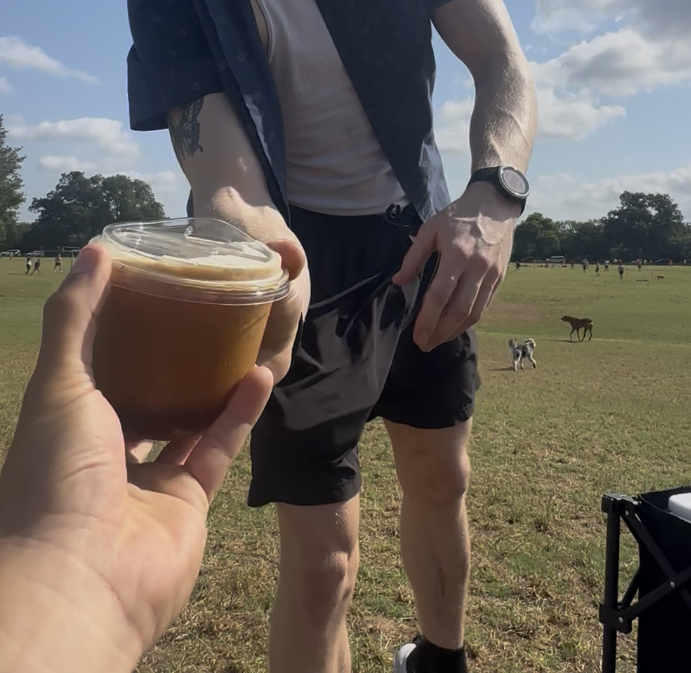

ABOUT
OUR STORY

STERLING BAKER
Owner
I started this coffee journey humbly, a keg of cold brew, and a wagon at Zilker Park. What I thought would be a side hustle turned into something much deeper.



As I shared coffee with strangers, I realized it wasn't just about the drink. It was about the people. The conversations. The feeling of being seen and connected, even for a moment.
That's what kept me coming back. That's what drives everything I do.

Austin has been my greatest teacher, open-hearted, vibrant, and full of people who show up for each other. I've built this company with those values at the center.
Yes, we care deeply about great coffee, and we hope that these cups can go further to foster community and the same feeling of connection amongst the people enjoying it.
TRY OUR COFFEE